noi esuli
Dalla fine cruenta della convivenza in Istria, Fiume e Dalmazia al faticoso e sofferto percorso di riconciliazione. La storia del confine orientale raccontata da chi l’ha vissuta. Per ricordare
«I l dramma dell’esodo è il dramma della lacerazione sociale e familiare. Un nucleo viene estirpato, perché la sua terra non è più sua». Lo spiega in pocheparole Adriana, esule da Zara, cosa fu il dopoguerra per gli italiani dell’Adriatico orientale, al di là del fiume di dibattiti politici e storiografici sulle vicende del confine orientale.
Quella dei giuliano-dalmati è una storia di dolore. Di vite strappate e ricostruite faticosamente altrove. Per i suoi involontari protagonisti, l’esodo è memoria dello sradicamento, paura della polizia jugoslava, ricordo del padre ucciso sommariamente, l’abbraccio al nonno che sceglie di restare per morire nella sua casa, la disperazione di «lasciare tutto», l’onta dell’accoglienza ricevuta nei campi profughi. Gli occhi si riempiono di lacrime anche dopo settant’anni. In occasione dei suoi 140 anni, Il Piccolo usa lo sguardo dei testimoni per ripercorre il filo di una storia che ha contribuito a raccontare sulle sue pagine.
Con l’esodo sparisce un’intera società: più di 300 mila italiani lasciano la propria terra. I centri costieri dell’Istria si svuotano, le radici si troncano. Poi «il silenzio ci ha colpiti per sessant’anni»: cala l’oblio su una vicenda scomoda per tutti, tenuta viva dalle associazioni dei profughi e oggetto di troppe strumentalizzazioni, che stanno lasciando il posto alla pacificazione fra italiani, sloveni e croati dopo una faticosa opera di distensione. Ciascuno con la sua memoria, ma pronti a tendere la mano, perché «i confini non dovrebbero più esistere», dice in uno dei filmati chi sa quale sia il valore della convivenza e quale il volto mostruoso dei nazionalismi e dei totalitarismi.
IL CONFINE
Così è stato definito il confine orientale, ridisegnato molte volte al mutare degli assetti geopolitici e della sovranità, dalla dominazione di Venezia all’amministrazione austriaca, passando per l’annessione all’Italia, la Seconda guerra mondiale e lo scontro totale che ne derivò. L’area oggi suddivisa fra Italia, Slovenia e Croazia ha vissuto tensioni nazionali, conflitti ideologici e guerre che ne hanno fatto un laboratorio della storia del Novecento.
le tappe di una lunga storia
Il crescendo di violenze politiche e nazionali che provocarono l’esodo giuliano-dalmata si spiega assumendo uno sguardo di lungo periodo fino ad arrivare al “secolo breve”, cominciato con la Grande guerra e proseguito con l’ascesa del Fascismo, l’invasione della Jugoslavia, la presa del potere di Tito e un trattato di pace che segnò la sorte dell’Adriatico orientale. Fatti da consegnare alla storia, dopo il lavoro di pacificazione compiuto nella cornice dell’integrazione europea.

 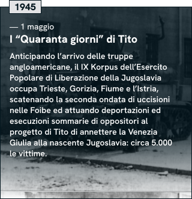
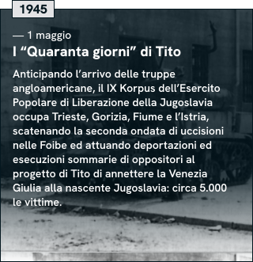
 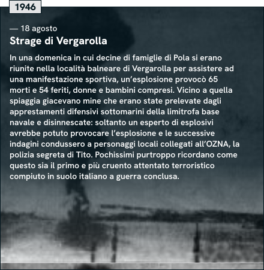
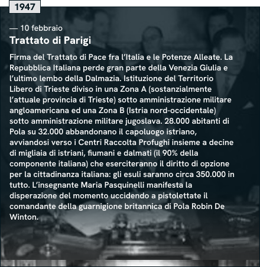
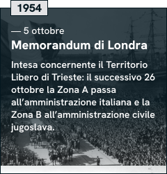
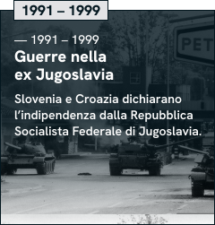
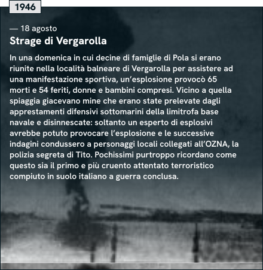
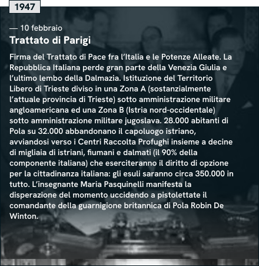
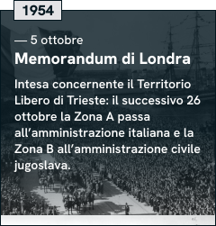
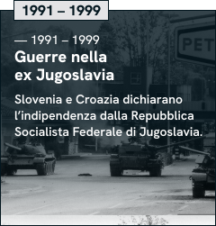
 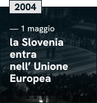
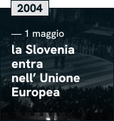

così si arrivò all’esodo
L’esodo inizia, «strisciante», dopo il 1943. Assume «proporzioni di massa» dopo il 1945 fino ad arrivare allo svuotamento di Pola nel 1947. A spiegarlo - e a ricordare come si è arrivati a una pagina così drammatica di storia - Giuseppe de Vergottini, presidente della Federazione delle Associazioni degli Esuli istriani, fiumani e dalmati, professore emerito di Diritto costituzionale.


Attraverso gli occhi dei testimoni
Partire o restare. Ogni famiglia istriana si tormenta in questo interrogativo. La memoria è vivida nei bambini di allora, quanto il dolore che non se ne va. La paura dei militari del nuovo regime, un parente arrestato e mai più tornato, l’uccisione efferata di Norma Cossetto: la pressione ambientale cresce e la maggioranza degli italiani lascia la propria casa, partendo verso un futuro incerto. Le radici vengono tagliate: «A casa mia non ho più avuto il coraggio di rimettere piede»
IL LUNGO ESODO
L’abbandono dell’Adriatico orientale da parte degli italiani è uno stillicidio di partenze che dura quindici anni. I primi a fuggire sono gli abitanti di Zara, dopo i bombardamenti alleati del 1943-1944. Seguono istriani e fiumani, a cominciare dallo svuotamento di Pola nel febbraio 1947. Infine i residenti della Zona B: l’addio comincia nel 1953, si accentua dopo la firma del Memorandum di Londra che cede alla Jugoslavia l’ultimo lembo d’Istria, dura fino alla fine degli anni Cinquanta.
“Piangevamo tutti”
«Guardate questo bel mare, chissà quando lo rivedremo». Il ricordo di chi parte è memoria di un addio sofferto, di genitori incapaci di consolare i propri figli, di povertà vissuta dignitosamente anche in un campo profughi. I ricordi sono tutti simili e tutti diversi, accomunati dalla lacerazione di chi si era convinto che «non era possibile rimanere» e gettava per l’ultima volta lo sguardo alla propria casa e agli amici, prima di incamminarsi «verso l’ignoto».
IL CIMITERO DEGLI OGGETTI
Ancora oggi il Porto vecchio di Trieste conserva in uno dei suoi depositi la testimonianza visiva più forte di quello che l’esodo significò per i profughi. È una storia che anche molti triestini hanno scoperto solo grazie allo spettacolo teatrale “Magazzino 18” di Simone Cristicchi. Montagne di sedie accatastate, armadi, fotografie, quaderni, stoviglie e altri oggetti minuti: reduci silenziosi del viaggio verso l’Italia, rimasti abbandonati da chi non ha potuto reclamarli una volta arrivato in patria.
Chi aveva deciso di partire dovette tentare di trasportare in poco tempo più cose possibili, caricandole su carri e imbarcazioni diretti verso Trieste e poi chissà dove. Valeva per i più fortunati, perché chi scelse di andarsene di notte mise nello zaino solo i vestiti di ricambio e qualche oggetto caro. Le masserizie furono accatastate in Porto vecchio e quelle non reclamate giacciono ancora lì.
Gli oggetti furono prima sistemati nei padiglioni del Magazzino 22 e poi traslocati al Magazzino 18, dove rimasero per decenni. L’opera di conservazione dell’Istituto regionale per la cultura istriano-fiumano-dalmata e lo spettacolo di Simone Cristicchi li hanno preservati e riportati alla luce: ora le masserizie sono diventate un’esposizione permanente nel Magazzino 26, trasformandosi da oggetto di memoria individuale in patrimonio collettivo.
Camminando nei depositi si trova di tutto: gli armadi con il cognome del proprietario scritto sul retro col gesso, le foto di famiglia, i quaderni dei bambini, gli attrezzi da lavoro, perfino una rete da pesca. Cose modeste, fossili di una quotidianità smarrita, proprietà di gente che proveniva da un’area poverissima e che a volte non riuscì nemmeno a recuperare ciò che aveva spedito e non poteva portare dentro un campo profughi.


L’umiliazione del campo profughi
L’accoglienza degli esuli non fu semplice per un’Italia in ginocchio. Chi non riuscì ad aiutarsi da sé venne ospitato in un centro raccolta profughi anche per anni. La penisola è punteggiata da queste strutture, ricavate perfino dentro ex campi di concentramento. La vita all’interno era «avvilente e drammatica»: famiglie costrette in box senza privacy e servizi igienici, in luoghi così precari che a Padriciano una bambina morì congelata nel duro inverno del 1956.
«All’interno del box era sottozero, mia sorella in una notte prese talmente tanto freddo…abbiamo chiamato l’ambulanza ma non c’era niente da fare. Marinella era morta di freddo». Fiore, da Grisignana, racconta la testimonianza più drammatica sulla vita nel campo profughi di Padriciano, a Trieste: uno dei 109 creati dal 1947 per ospitare gli esuli giuliano-dalmati, che in maggioranza non erano in grado di provvedere alla propria sopravvivenza. Il governo ricava spazi dentro caserme, ospedali, conventi, fabbriche dismesse e perfino ex campi di concentramento, come la Risiera di Sabba o Fossoli.
Buona parte degli esuli passa per Trieste e viene rapidamente sventagliata (come scrivevano le autorità), senza possibilità di esprimere la preferenza: ci si deve adattare alle disponibilità. La situazione che trovano è indecorosa: i box misurano pochi metri quadrati e sono divisi da lenzuola o pannelli di legno. La permanenza spesso si allunga per anni: nel 1963 ci sono ancora 8.500 persone nei 15 centri rimasti aperti. L’ultimo chiude nel 1975.
Le memorie raccontano di condizioni igieniche precarie, dell’umiliazione di dover lasciare le impronte digitali, della sensazione di essere gli unici a pagare la guerra fascista. Difficile integrarsi, perché gli esuli sono tenuti isolati: gli abitanti li vedono come assistiti e come pericolosi concorrenti nella ricerca di lavoro. «Siamo esuli, non ci vogliono. Questo fatto ci è rimasto appiccicato addosso».

.jpg)


 1.jpg)
 veduta.jpg)


 profughi giuliano dalmati ai primi lavori della terra dopo insediamento Campo Profughi.jpg)


IL RISCATTO DI UN POPOLO
Attrici, sportivi, intellettuali, cantanti, stilisti e cuochi. Partiti dalla condizione di profughi, ma capaci di diventare simbolo di riscatto per un popolo ormai disperso. La voce di Sergio Endrigo, la bellezza e la bravura di Laura Antonelli, i pugni di Nino Benvenuti, la velocità di Mario Andretti, gli scritti di Fulvio Tomizza ed Enzo Bettiza, le creazioni di Ottavio Missoni, l’arte culinaria di Lidia Bastianich: sono il talento che i giuliano-dalmati hanno saputo spargere nel mondo.
 Mario Andretti
Mario Andretti
 Laura Antonelli
Laura Antonelli
 Lidia Bastianich
Lidia Bastianich
 Nino Benvenuti
Nino Benvenuti
 Enzo Bettiza
Enzo Bettiza
 Sergio Endrigo
Sergio Endrigo
 Ottavio Missoni
Ottavio Missoni
 Abdon Pamich
Abdon Pamich
 Agostino Straulino
Agostino Straulino
 Giorgio Luxardo
Giorgio Luxardo
 Fulvio Tomizza
Fulvio Tomizza
Finalmente il futuro
Una giovane studentessa spiega che «avere memoria non è solo ricordare come si sono susseguiti i fatti, ma restituire dignità a coloro che hanno vissuto sulla loro pelle questo terribile evento». Memoria e ricostruzione storica possono oggi convivere serenamente, tanto più dopo la pagina nuova che i presidenti di Italia e Slovenia Sergio Mattarella e Borut Pahor hanno aperto, tenendosi per mano sui luoghi simbolo delle violenze perpetrate a Trieste da nazifascisti e comunisti.
Per arrivare fin qui si è dovuto anzitutto aprire il dialogo in Italia: un percorso avviato da Fini e Violante nel 1998, approdato sei anni più tardi all’istituzione del Giorno del Ricordo, nato affinché in tutta Italia si potesse finalmente conoscere la storia travagliata del confine orientale. Ripercorrerne i fili per via digitale è fondamentale per aprirsi ai giovani che, forse per primi, si affacciano adesso senza il peso delle strumentalizzazioni su un racconto che può essere finalmente consegnato agli storici, ma che non deve smarrire il vissuto della “gente qualunque”, che della storia è stata quasi sempre spettatrice o purtroppo vittima.
Quelle del dopoguerra non furono solo lacerazioni. Dagli anni Sessanta la frontiera fra Italia e Slovenia continuava a separare due mondi, ma divenne la più aperta fra quelle poste sulla Cortina di ferro. E se alcuni esuli non riuscivano nemmeno a pensare di tornare in visita alla propria terra, altri riallacciarono le relazioni con l’Istria, luogo a tutt’oggi splendidamente misto per linguaggi e identità. Il crollo del comunismo e l’integrazione europea stanno facendo il resto, dopo un lungo percorso di comprensione reciproca che tocca ai giovani rendere irreversibile.